Design Work — LEGO · Iterative Design
An ongoing collection of custom builds — each car exploring a different design challenge, from motorized drive systems to working popup headlights. The project that started it all.
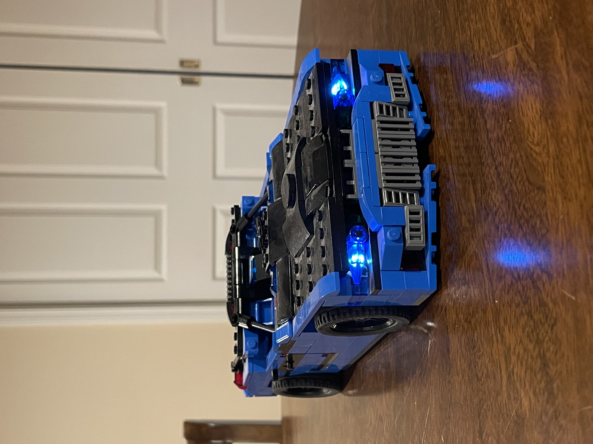
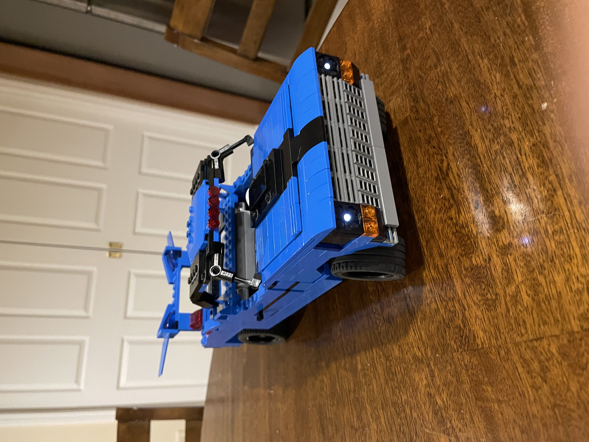
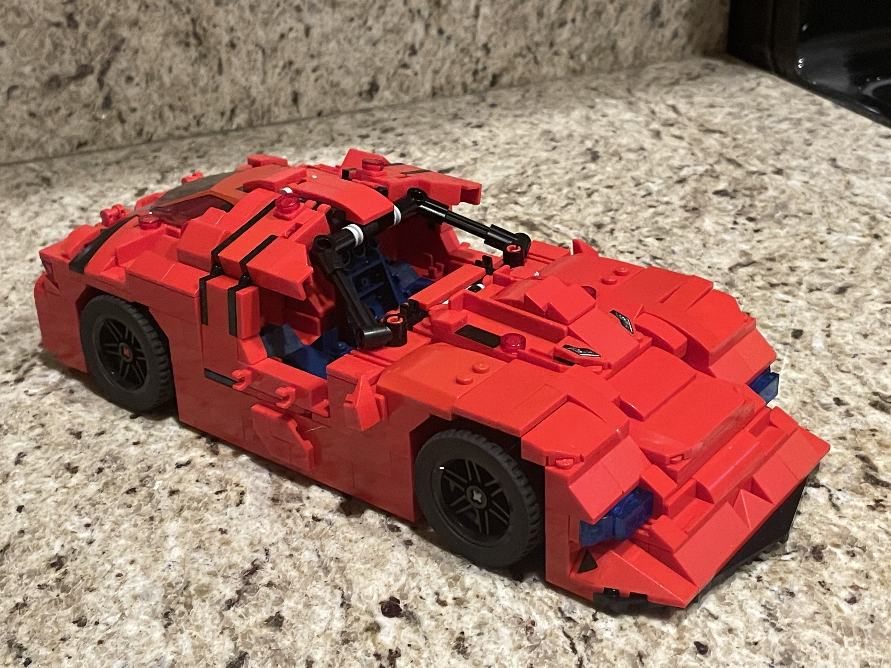
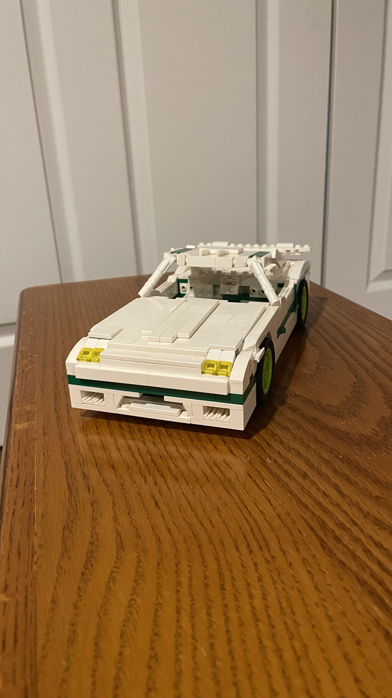
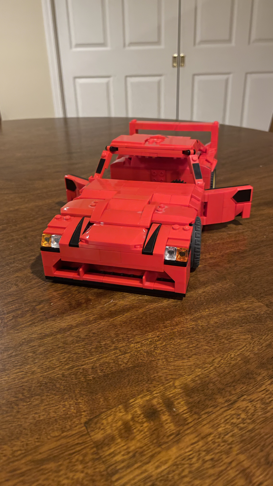
I've always bought LEGO sets with one intention — build them once, then tear them apart for the pieces. Every car in this collection starts with a different constraint or challenge: figure out how to make popup headlights work, incorporate a motor, try a different build orientation, nail a specific door hinge. The goal was never to clone a real car accurately — it was to solve a specific design puzzle with whatever pieces I had. Looking back, this is where my approach to engineering actually formed: pick a problem, build something, take it apart, build it better.
Timelapse of how I build, working on individual sections and then seeing how they fit.
The Camaro has always been my favorite car, but the curves of the body were challenging to build with LEGOs. I also took inspiration for the door hinges from Koenigsegg, seeking to replicate the unique opening sequence on their cars.
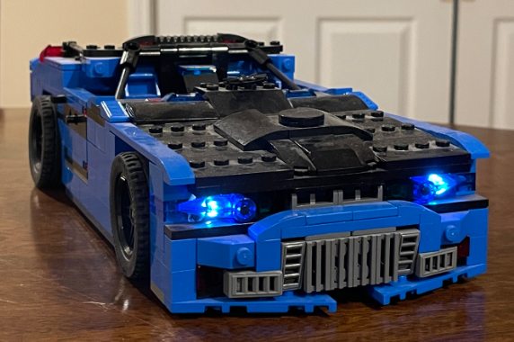
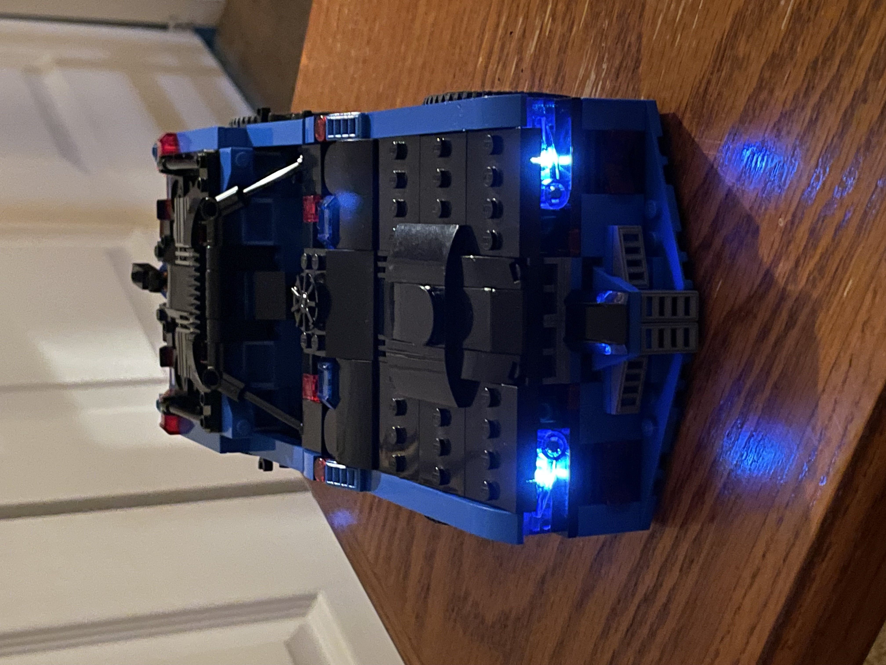
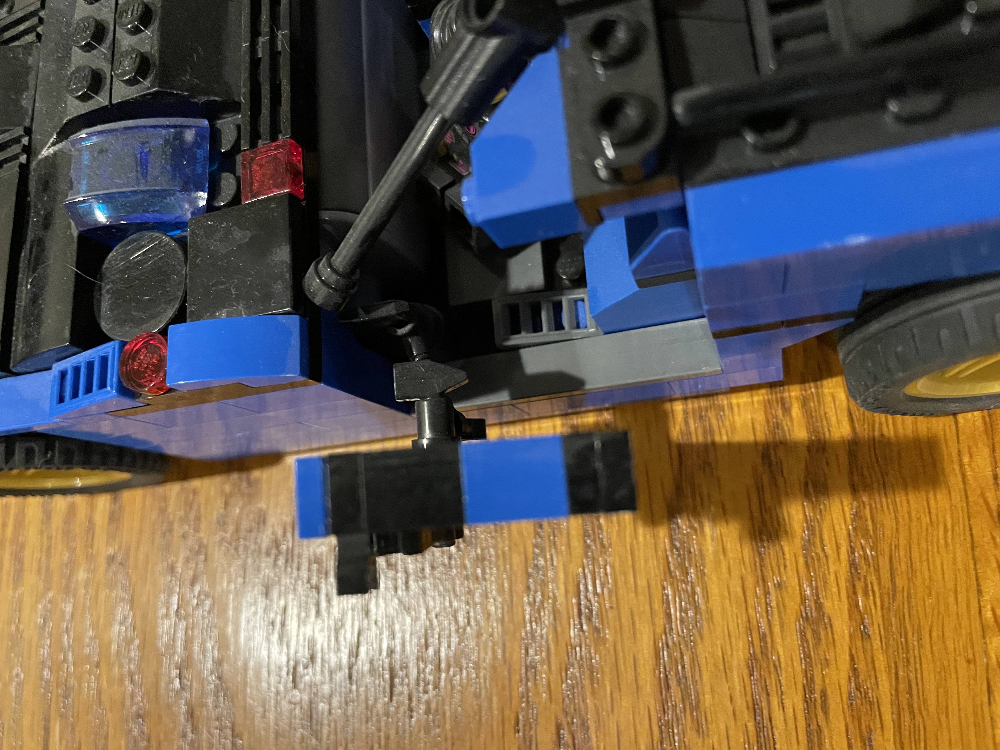
This build was less mechanical and more about seeing how realistic I could make it. The proportions were difficult to get correct, but the final product turned out quite well.
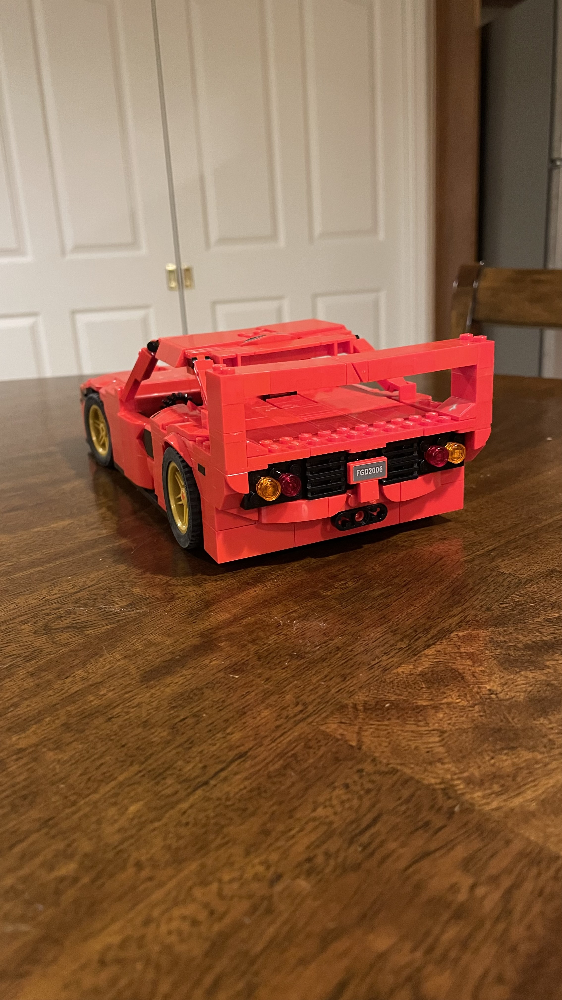
This build was recreating a friend's truck, and making a motorized drivetrain with enough power to pull a trailer with the other cars.
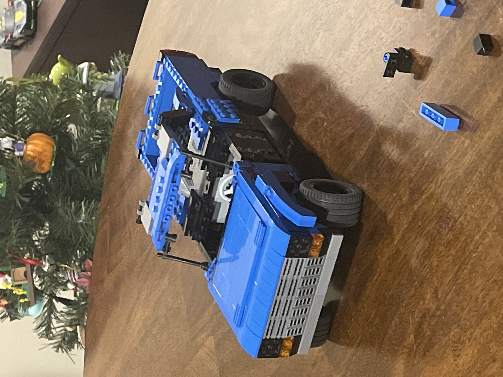
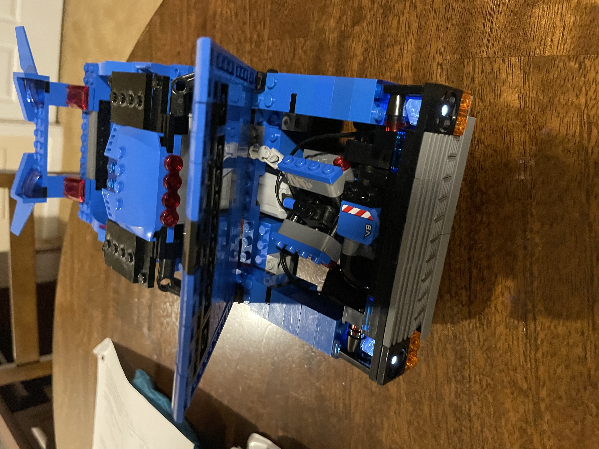
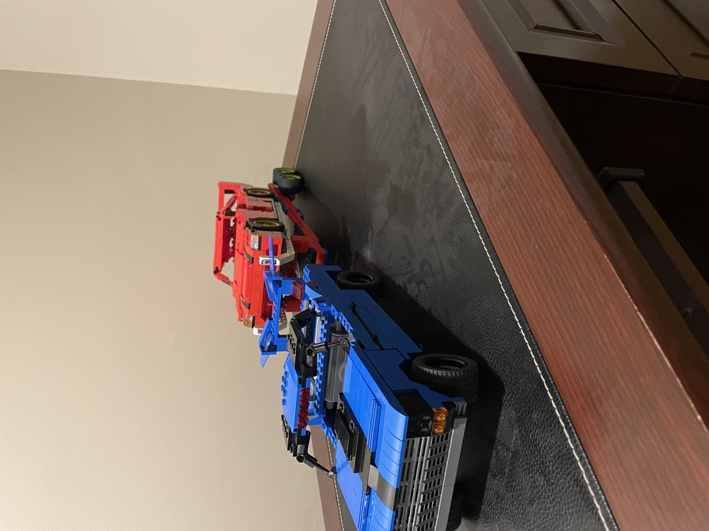
This was my first attempt at making popup headlights, and they were very temperamental. Several of the first mechanism iterations worked, but were particularly finicky and unreliable. The final design was a combination of several approaches, each fixing a weakness of the others.
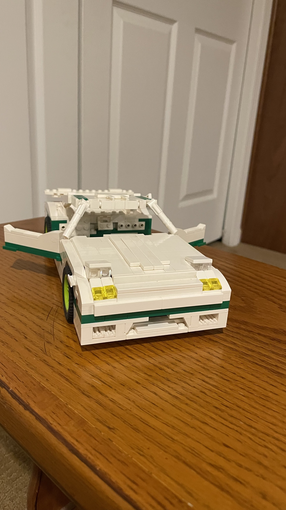
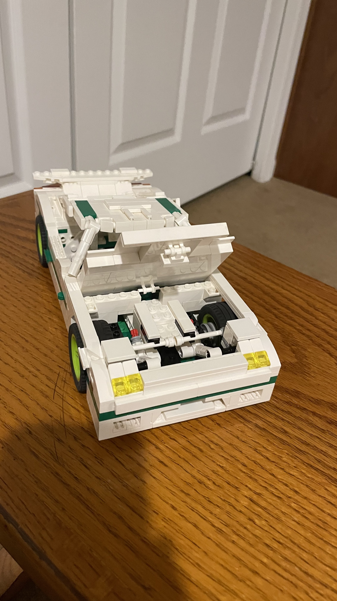
As one of the very first cars I created, this build taught me a lot about the structural integrity the models would need to stay together. No specific car was referenced for the design, with the main focus being on the gullwing doors.
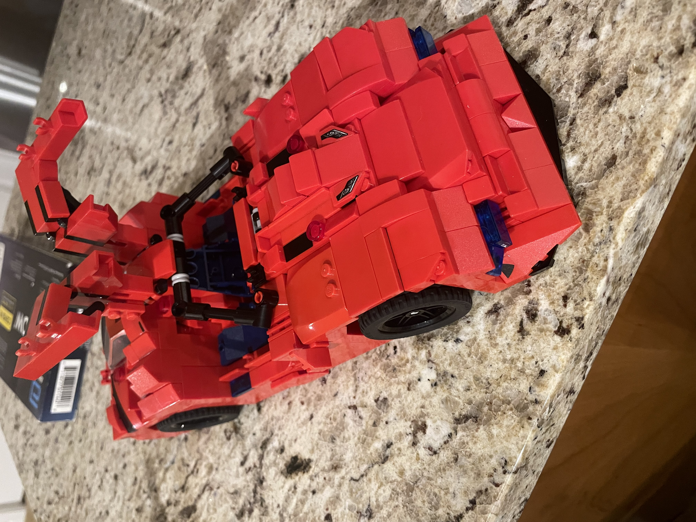
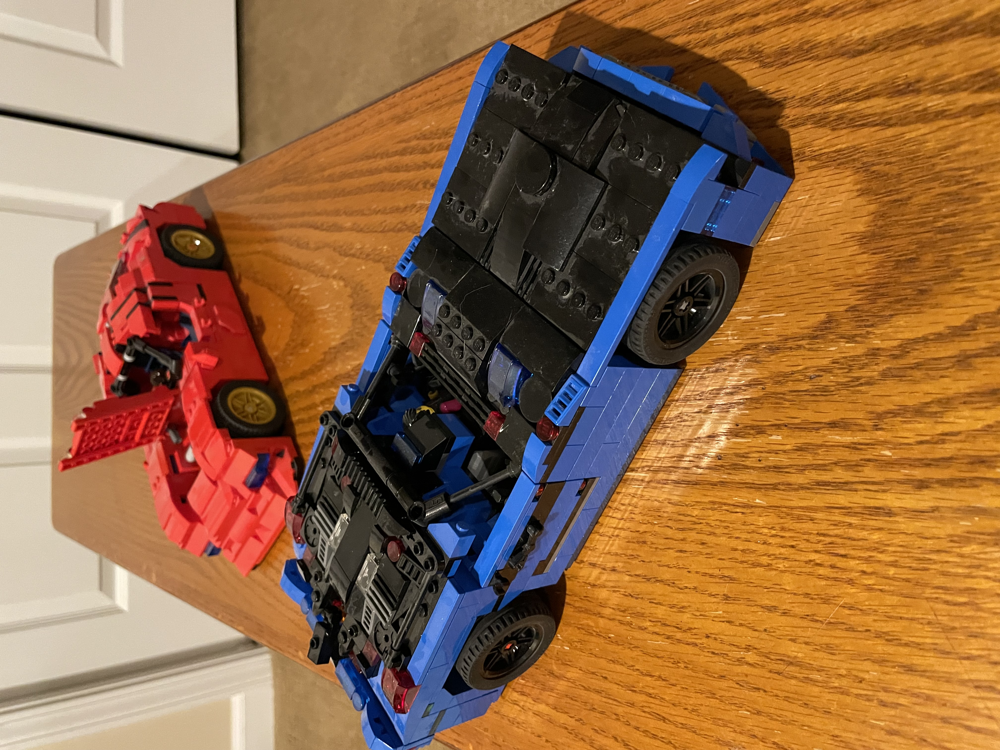
Every engineering instinct I have — prototype fast, iterate, don't be precious about tearing it apart and starting over — came from years of doing exactly that with LEGO. The connection to 3D printing is direct: it's the same loop, just with a different material. You design something, make it physical, find out what's wrong, and go again. That cycle is the core of how I approach any build, and it started here.